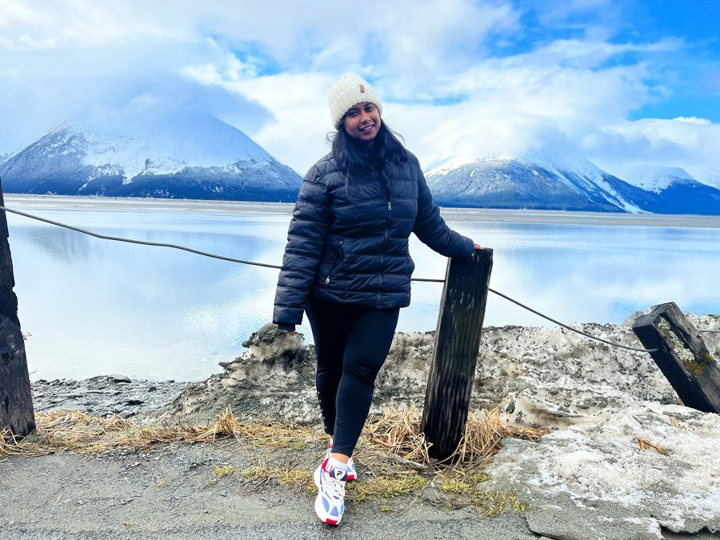

Hi, my name is Sumana Sahoo. I am a PhD candidate in the Department of Natural Resources and Environment at the University of Alaska Fairbanks. My research includes developing tools and methods to monitor boreal forest vegetation changes and map disturbances, focusing primarily on insect disturbances like leafminer defoliation. I utilize satellite observations to assess vegetation dynamics across these boreal landscapes and understand their links to climate change. I hold a Bachelor's degree in Civil Engineering, and a Master's degree in Remote Sensing and GIS with a specialization in Geoinformatics. My goal is to continue leveraging advanced geospatial tools, satellite imagery, and data science to drive impactful environmental research, inform climate adaptation strategies, and promote the sustainable management of our natural resources.